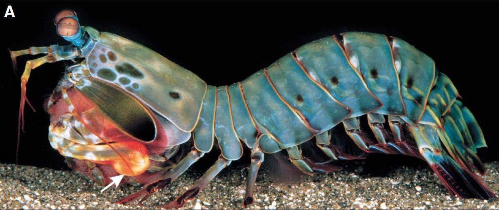

Fatos sobre o Stomatopoda
Stomatopoda
- Nome Popular: Tamarutacas, lacraias-do-mar
- Nome científico: Odontodactylus scyllarus
| Reino | Filo | Subfilo | Classe | Subclasse | Ordem |
|---|---|---|---|---|---|
| Animalia | Arthropoda | Crustacea | Malacostraca | Hoplocarida | Stomatopoda |
Descrição:
Os estomatópodes são predadores ativos que caçam presas com o auxílio de um sentido de visão muito apurado e capaz de interpretar polarização no espectro ultravioleta e infravermelho. Eles
Visão:
A Stomatopoda tem 16 córneas receptivas o que possibilita que ela enxergue 13 espectros de cores que nós, humanos, não conseguimos nem processar.

Poder de ataque
Apesar da beleza em suas cores, a Stomatopoda é um dos animais mais agressivos do globo. Ela possui garras que atacam a uma velocidade similar a de um rifle 22 calibres atingindo uma força de 1.500N (newtons).

Velocidade
Elas são tão rápidas que o movimento de suas patas liberam calor suficiente para que aágua ao seu redor ferva.